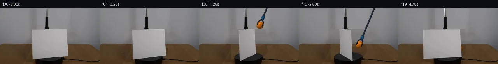

![首帧]()

Round 00
2026-11-04T19:21:30.379134+00:00像素候选变化代码 +275/−0inspection 更新
pixels 4839ae067f32e760 · code b6b1d3721a8d8bc5
查看本轮 generate.py 真实 diff
--- previous/generate.py
+++ current/generate.py
@@ -0,0 +1,275 @@
+"""Pixel-only, source-image-based rendering of a rotating-card occlusion experiment."""
+from pathlib import Path
+import json
+import numpy as np
+from PIL import Image, ImageDraw, ImageFilter
+import cv2
+from scipy.ndimage import gaussian_filter, map_coordinates
+from artifact_io import save
+
+ROOT = Path(__file__).resolve().parent
+S = 4
+W, H = 256, 144
+rng = np.random.default_rng(5005)
+source = np.array(Image.open(ROOT / 'first_frame.png').convert('RGB'))
+quad0 = np.array([[82.0,54.8],[170.4,53.5],[175.2,123.0],[83.7,131.0]], np.float32)
+
+# An upright plane, a downward-looking camera, and a calibration homography.
+# Positive yaw sends its right edge away from the camera: clockwise from above.
+alpha = np.deg2rad(13)
+angle0 = np.deg2rad(19)
+D, F = 450., 450.
+card_xyz = np.array([[-38.,76.5,0.],[54.,76.5,0.],[54.,0.,0.],[-38.,0.,0.]])
+
+def pinhole(points):
+ x, h, z = np.asarray(points).T
+ depth = D - h*np.sin(alpha) + z*np.cos(alpha)
+ return np.stack([121.+F*x/depth,128.-F*(h*np.cos(alpha)+z*np.sin(alpha))/depth],axis=1)
+
+def rotate(points, theta):
+ p = points.copy()
+ p[:,0] = points[:,0]*np.cos(theta) - points[:,2]*np.sin(theta)
+ p[:,2] = points[:,0]*np.sin(theta) + points[:,2]*np.cos(theta)
+ return p
+
+calibration = cv2.getPerspectiveTransform(pinhole(rotate(card_xyz,angle0)).astype(np.float32),quad0)
+
+def project(points):
+ q = pinhole(points)
+ h = np.c_[q,np.ones(len(q))] @ calibration.T
+ return h[:,:2]/h[:,2:]
+
+def paper_quad(theta):
+ return project(rotate(card_xyz,theta))
+
+# Recover the unobserved stationary background only where the paper covered it.
+mask_im = Image.new('L',(W*S,H*S),0)
+ImageDraw.Draw(mask_im).polygon([tuple(p*S) for p in quad0],fill=255)
+mask = np.array(mask_im.resize((W,H),Image.Resampling.LANCZOS))/255.
+mask = cv2.dilate(mask.astype(np.float32),np.ones((3,3),np.uint8),iterations=1)
+mask = np.clip(gaussian_filter(mask,.28),0,1)
+yy,xx = np.mgrid[:H,:W]
+# Wall: interpolate the same-row gray values from either side of the paper.
+wall = np.zeros((H,W,3),np.float32)
+for y in range(H):
+ left = source[y,77:81].mean(0)
+ right = source[y,180:184].mean(0)
+ t = np.clip((np.arange(W)-80)/101,0,1)[:,None]
+ wall[y] = left*(1-t)+right*t
+wall += rng.normal(0,.35,(H,W,1))
+# Table: use a real wood patch from the image, with continuous coordinate sampling.
+wood_x = 23. + (xx-81)*.55 + (yy-110)*.055
+wood = np.stack([map_coordinates(source[:,:,c].astype(float),[yy,wood_x],order=1,mode='nearest') for c in range(3)],axis=-1)
+# Match broad illumination to the exposed right-hand tabletop.
+wood += np.stack([6.+.032*(xx-128),4.+.022*(xx-128),2.+.016*(xx-128)],axis=-1)
+edge_y = 91.45 + (xx-80)*.013
+blend = np.clip((yy-edge_y+.4)/1.0,0,1)[...,None]
+recovered = wall*(1-blend)+wood*blend
+# Dark pedestal and the continuing spindle, revealed as the card turns.
+base = Image.new('RGBA',(W*S,H*S),(0,0,0,0))
+bd = ImageDraw.Draw(base)
+def poly(draw, points, fill):
+ draw.polygon([tuple(np.array(p)*S) for p in points],fill=fill)
+def ellipse(draw, box, fill):
+ draw.ellipse(tuple(np.array(box)*S),fill=fill)
+def line(draw, points, fill, width):
+ draw.line([tuple(np.array(p)*S) for p in points],fill=fill,width=max(1,int(width*S)),joint='curve')
+# The cylinder is clipped naturally at the lower frame boundary.
+bd.rectangle((90.5*S,125.5*S,164.1*S,151*S),fill=(13,13,12,255))
+ellipse(bd,(90.5,133.,164.1,157.),(12,12,11,255))
+ellipse(bd,(90.5,113.7,164.1,137.0),(29,29,28,255))
+ellipse(bd,(91.4,114.6,163.1,136.1),(34,34,33,255))
+line(bd,[(118.9,53),(121.0,118.9)],(17,18,18,255),3.9)
+line(bd,[(118.0,55),(120.1,117)],(39,39,39,255),.65)
+ellipse(bd,(116.5,115.5,125.7,120.9),(17,18,18,255))
+base_arr=np.array(base.resize((W,H),Image.Resampling.LANCZOS)).astype(float)
+ba=base_arr[:,:,3:]/255
+recovered=recovered*(1-ba)+base_arr[:,:,:3]*ba
… diff truncated; 188 more lines …